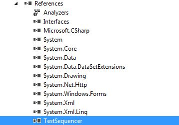
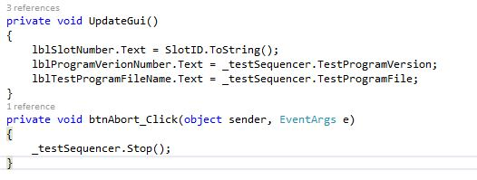
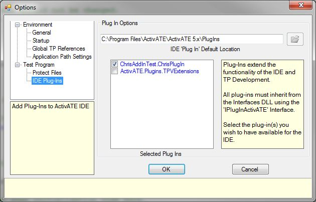
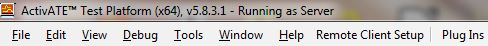
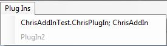
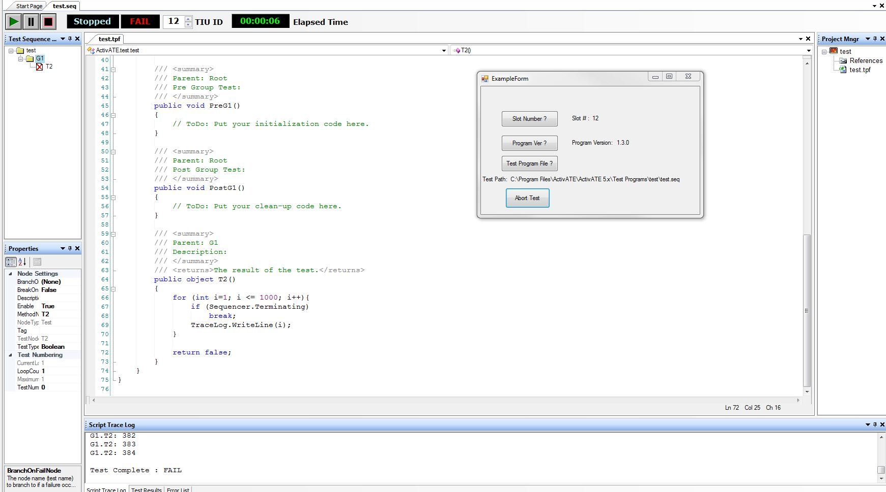

Beginning in ActivATE version 5.8.0.4, support for user-defined plugins is an included feature. Plugins are user created programs that can be used to interact with an ActivATE test program. To create a plugin for ActivATE, the plugin's project must have a class that inherits from and implements the IPluginActivATE interface, as seen below:
Implement the IPluginActivATE interface:
References to Interfaces.dll and TestSequencer.dll will need to be added to your plugin's project as well. Both of these files can be found in the ActivATE runtime directory (usually C:\Program Files\ActivATE\ActivATE 5.x). In addition, the Racal.Sequencer namespace will be needed in order to have access to the TestSequencer class, which allows for use of many of ActivATE's properties and methods such as getting the version of your test program, the name of the test program file, group and node names, etc. See the images below that demonstrate this.
Add Interfaces.dll and TestSequencer.dll to your project's references:
Make sure that the files in your plugin's project have the below namespace in order to access TestSequencer class if needed:
Here is an example of an instance of the TestSequencer class named _testSequencer, along with some of its members that can give us information about the test program:
To run or preview your plugin from ActivATE, click on the Tools menu in ActivATE and then Options from the context menu that appears, and then navigate to IDE Plug-Ins. Only one plugin at a time is supported as of this writing, so place a checkmark on just one plugin if you have multiple as seen below. Press OK.
Next, launch your test program in order to see the Plugins menu below:
Then, select your plugin from the context menu:
After clicking the above plugin name, your plugin will launch. Here is an example plugin that obtains the test program file name + path, current slot number, test program version, and this plugin can also abort the test:
Astronics Test Systems
Last updated on 1/27/2016 C. Colome